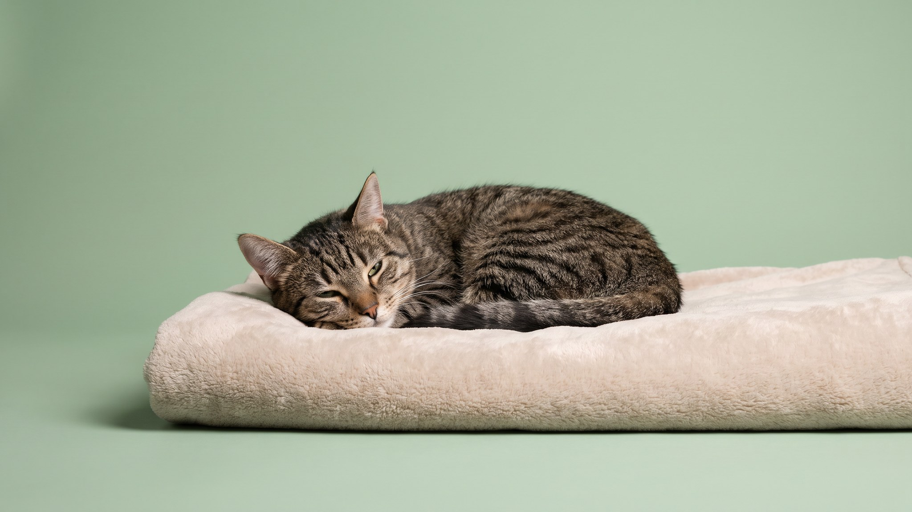

Кошка свернулась на диване, дышит ровно — и вдруг замечаешь: глаза приоткрыты, из угла выглядывает белёсая плёнка. Выглядит жутковато. Большинство хозяев в этот момент либо пугаются, либо начинают трясти кошку, чтобы убедиться, что всё в порядке. Делать этого не нужно: в большинстве случаев это нормальная физиология. Разбираем, почему так происходит и когда стоит обратить внимание.
🐾 У вашей кошки так же?
Расскажите в AnimaLife, как ведёт себя ваш питомец, — приложение объяснит причину и даст пошаговый план. Бесплатно, без записи к специалисту.
Разобрать свой случай → Разобрать в MAX →
У вас iPhone? AnimaLife есть в App Store
Кошки проводят во сне 12–16 часов в сутки, пожилые — до 18–20. Но большая часть этого времени — не глубокий сон, а дремота: лёгкая фаза, из которой кошка выходит за секунды при любом звуке или движении.
Именно в дремоте мышцы век расслабляются не полностью. Глаза остаются приоткрытыми на 1–3 мм — достаточно, чтобы заметить. В глубоком сне веки, как правило, закрыты плотнее. Так что приоткрытые глаза чаще всего означают не крепкий сон, а поверхностную дремоту.
Белёсая или розоватая плёнка во внутреннем углу глаза — это третье веко, или мигательная перепонка. Есть у всех кошек, но в норме почти не видна у бодрствующего и здорового животного.
Третье веко выполняет несколько задач: увлажняет роговицу, защищает глаз при движении через кустарник или в драке, помогает распределять слёзную плёнку. Во время дремоты, когда мышцы расслаблены, перепонка слегка выдвигается вперёд — отсюда и пугающая белая полоска.
Кошка — одновременно хищник и потенциальная добыча. Эволюционно глубокий сон без контроля за окружением был опасен. Поэтому большую часть времени кошка находится в состоянии готовности: мозг фиксирует звуки и движение даже при закрытых глазах и расслабленном теле.
Приоткрытые глаза в дремоте — физическое проявление этой готовности. Мышцы не полностью отпускают напряжение, пока кошка не перешла в фазу глубокого сна.
Если хочется убедиться, что всё в порядке, — не трясите кошку. Просто понаблюдайте 10–15 секунд:
Будить кошку без причины не нужно. Прерывание сна — стресс, который накапливается. Если кошка легла, значит ей так удобно.
Третье веко во сне и дремоте — норма. Насторожить должно другое:
Любой из этих признаков — повод описать ситуацию ветеринару и показать животное при осмотре. Врач оценит состояние глаза и подберёт нужные действия. Самостоятельно капать что-либо в глаза без назначения не стоит.
Материал носит информационный характер и не заменяет очную консультацию ветеринара.
🐾 Хотите понять, что кошка говорит вам?
Опишите ситуацию или пришлите видео в AnimaLife — AI разберёт поведение вашего питомца и подскажет, что делать. Бесплатно, ответ за минуту.
Разобрать поведение → Разобрать в MAX →
У вас iPhone? AnimaLife есть в App Store
🐾 Понравился разбор?
Подпишитесь на канал — каждый день разбираем по одному тревожному симптому у кошек и собак: что в пределах нормы, а когда пора к врачу. Подпишитесь, чтобы не пропустить разбор, который может спасти здоровье вашего питомца.